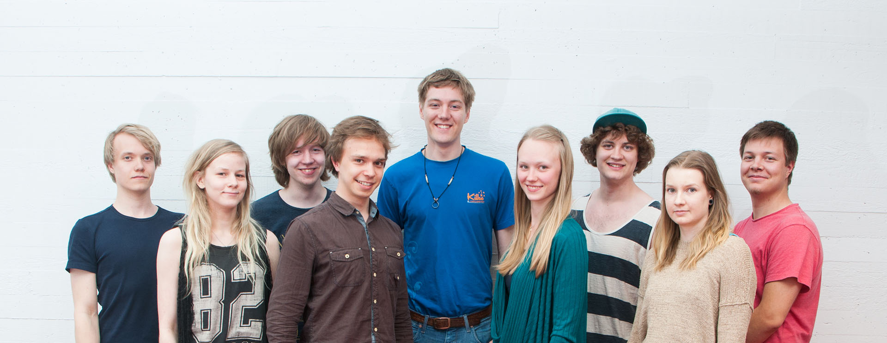

TEAM
We are the first ever Finnish iGEM-team and we are doing groundbreaking work to improve the top level expertise in our country. Our nine team members are under 24-year-old students from University of Helsinki and Aalto University. We are an multidisclipinary group and all of us are interested in synthetic biology and the possibilities it offers. In our team we have expertise in bioinformatics, molecular biosciences, mathematics, physics, computer science, genetics, systems sciences, food technology, chemistry, product development, bioprocess technology, bionics, industrial management, biotechnology and electrical engineering.